Goldwreath Waters be no ordinary sea. It be enchanted, cursed, and hungry.
Some say the ocean itself spits treasure to the surface, golden crowns, glimmering coins, diamond necklaces, and jewels stolen from ships long forgotten.
But that treasure be bait. The sea lures pirates close, fills their hearts with greed, then drags their ships into the black deep.
Only the boldest crews dare enter the tempest. Fewer still return with riches.
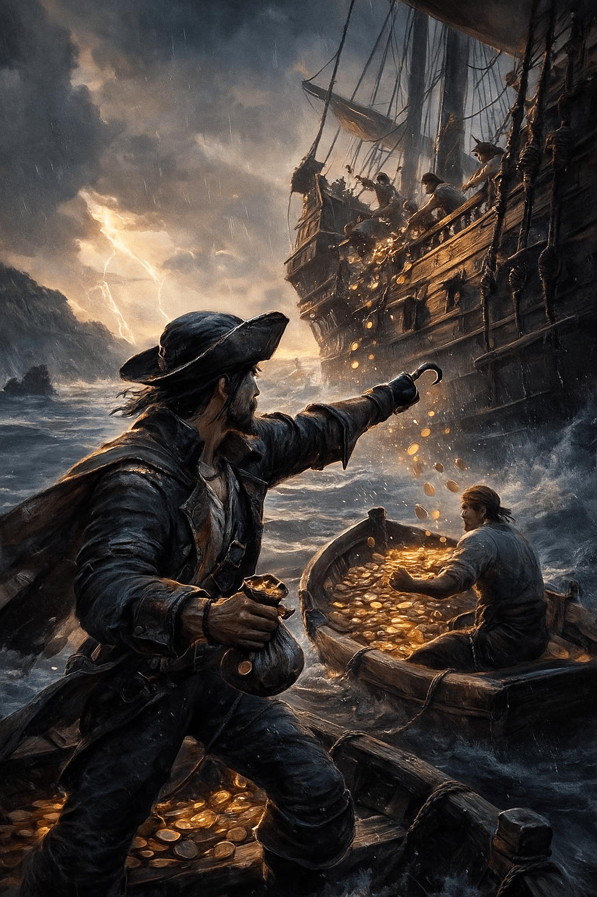
The Storm Swindler never waits for treasure to come honest. He slips between ships in the chaos, stealing gold from other pirates while the waves hide his crimes. By the time a crew notices their pouch is lighter, he is already gone in the rain.
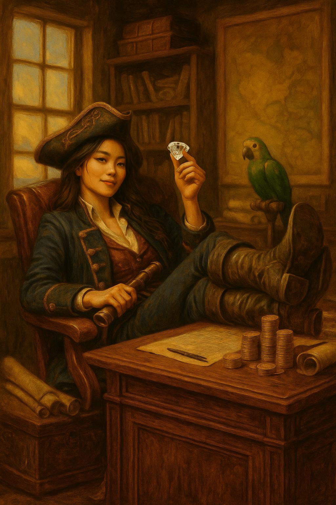
The Merchant came to Goldwreath Waters chasing profit, not glory. She knows every jewel has a story and every pirate has a price. Some say she can bargain with cursed treasure itself and still walk away richer.
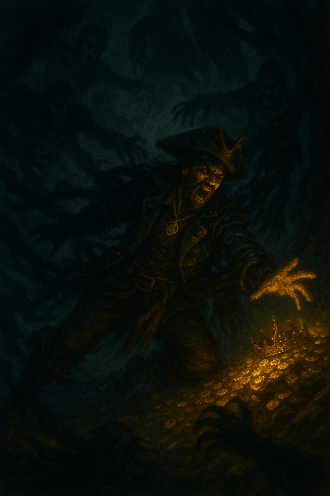
The Cursed Captain was once swallowed by the sea and spat back out half alive. Shadows follow him wherever he sails, whispering of ships that never returned. He does not fear curses because he carries one in his own blood.
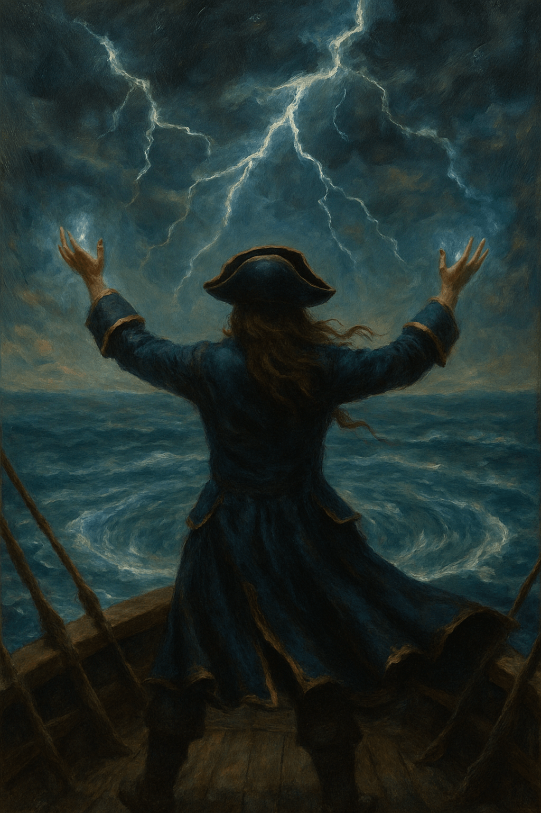
The Storm Warden made a pact with fate when Goldwreath Waters tried to take her. Now the sea seems to pay back part of what it steals from her crew. Some pirates call it luck, but she knows better.
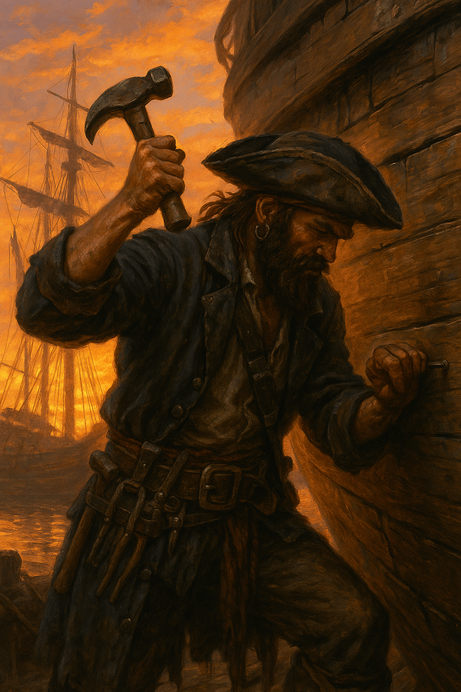
The Mechanic can mend a shattered hull while waves crash over the deck. Pirates seek him when their ships are near death and their luck is nearly gone. He keeps crews alive when the storm should have claimed them.
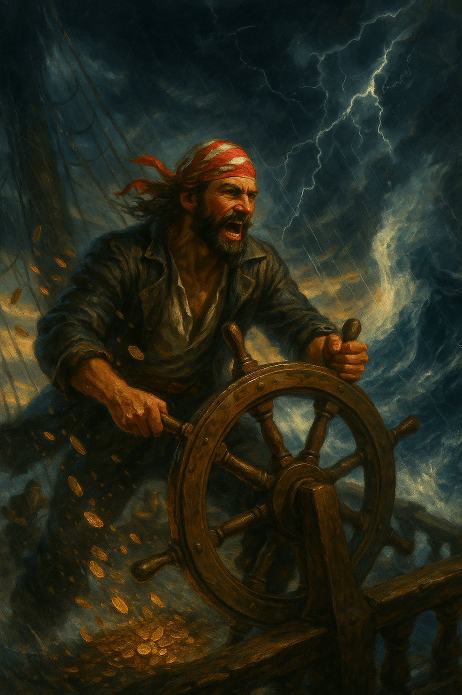
The Storm Dodger sails like the sea owes him a favor. He has slipped past whirlpools, outrun black clouds, and escaped waves that swallowed larger ships whole. No one knows if it is skill, luck, or something darker guiding his hands.
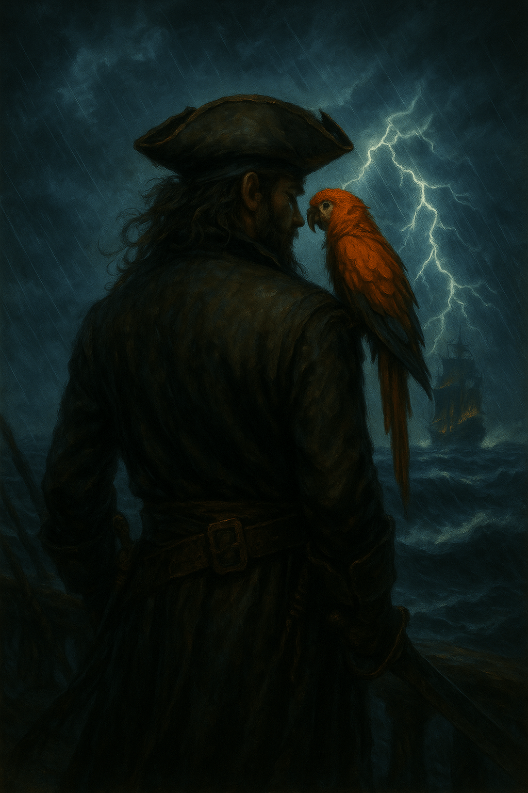
The Parrot Whisperer trusts his bird more than any compass. The crimson parrot squawks warnings before disaster strikes and stares into storms like it sees the future. Some sailors laugh at him, but most of those sailors are dead now.
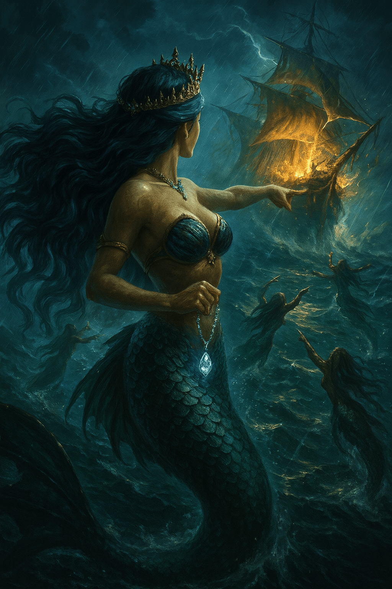
The Siren Queen rules the songs beneath the waves. Her voice can turn strong captains into fools and pull entire ships toward glowing ruin. In Goldwreath Waters, silence is safety, but when she sings, no one remembers that.
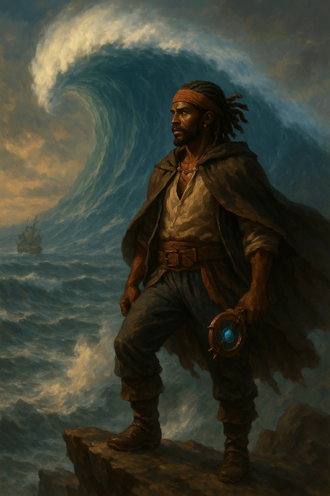
The Tide Watcher studies the sea like others study maps. He sees danger in ripples, treasure in moonlight, and death in the curl of a wave. When he tells a crew to run, wise pirates do not ask why.
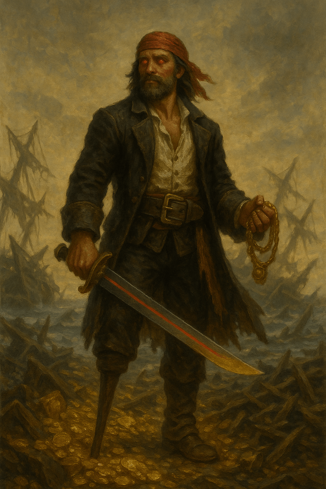
The Blood Sailor appears after wrecks, walking through broken wood and scattered gold. Some say every doomed ship makes him stronger. Others say he is not chasing treasure at all, but collecting debts owed to the storm.
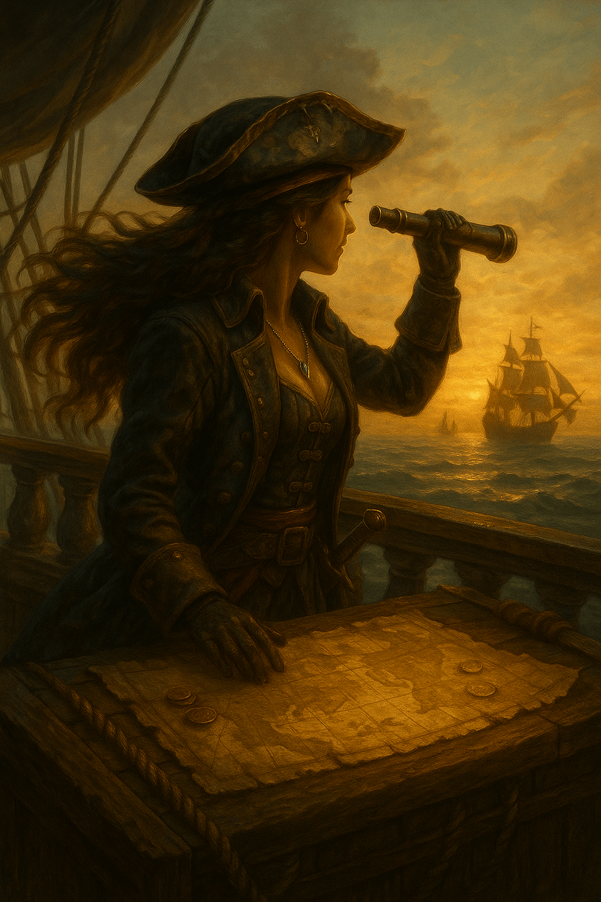
The Navigator charts paths no sane sailor would follow. She can read stars hidden behind clouds and find safe water where others see only doom. Many crews owe their lives to her, though she rarely stays long enough to be thanked.
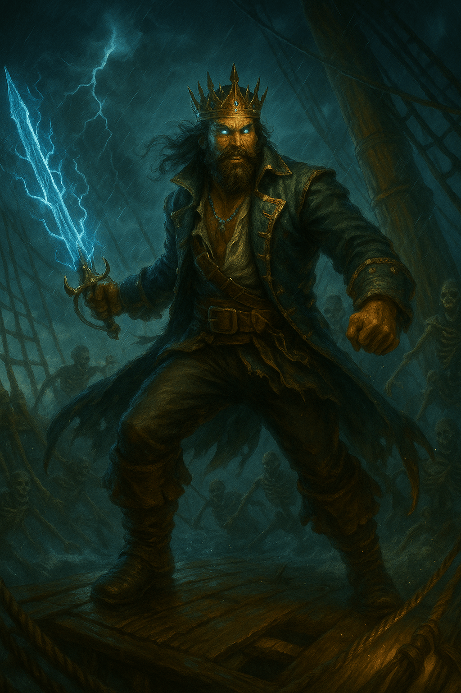
The Tempest King was once a mighty ruler with fleets, riches, and the loyalty of thousands. But greed hollowed him out until no crown, coin, or conquest was enough. Now he sails Goldwreath Waters like a king of ruin, chasing treasure he can never truly keep.
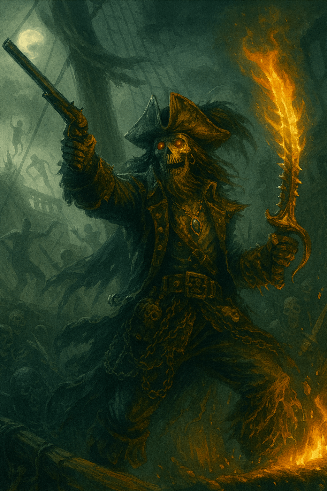
The Undead Admiral sank with his fleet and rose with something worse than revenge. Now ghostly crews answer his orders from beneath the waves. When his lantern burns green in the fog, even the bravest pirates turn their ships away.
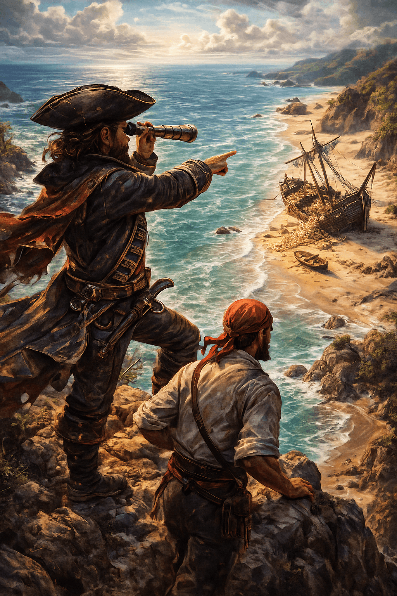
The Marooned Monarch waits where wrecked ships drift and desperate sailors cry for rescue. He does not save them. He feasts on abandoned vessels, broken crews, and every scrap of treasure left behind.